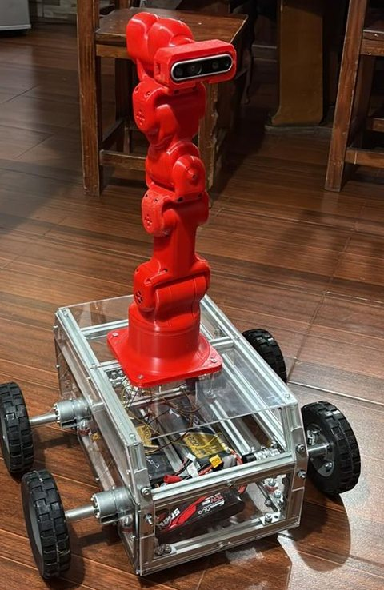

A
B
C
D
E
F
1
2
3
4
5
ALL
00
Adán López Lozano
Mecatrónica · Ibero
Proyectos
Acerca
Contacto
ES
EN
Abierto a prácticas en robótica · CDMX
Diseño y construyo robots, del chasis al nodo de ROS 2.
Ver proyectos
Documentación en GitHub
PROTÓN en 3D
FIRST PRIZE
Huawei ICT Competition 2025–2026
Prueba en un invernadero de jitomate

PROTÓN armado
Mi parte
Ver la ficha completa
Simulación en pantalla completa
Proyectos
Acerca de mí
Herramientas
Contacto
×